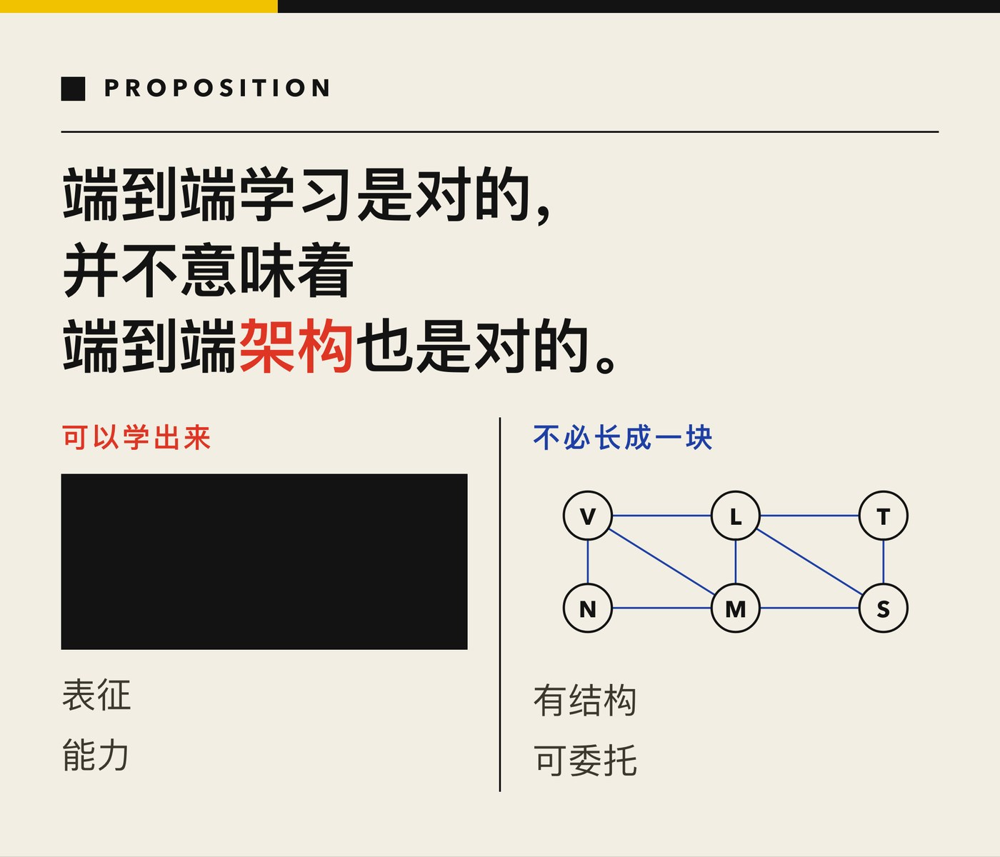
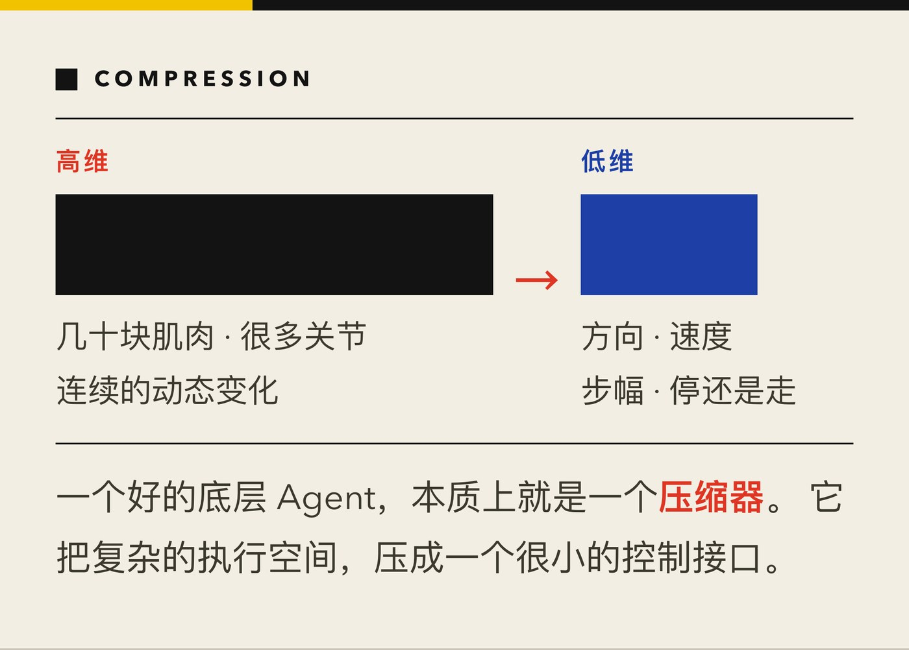
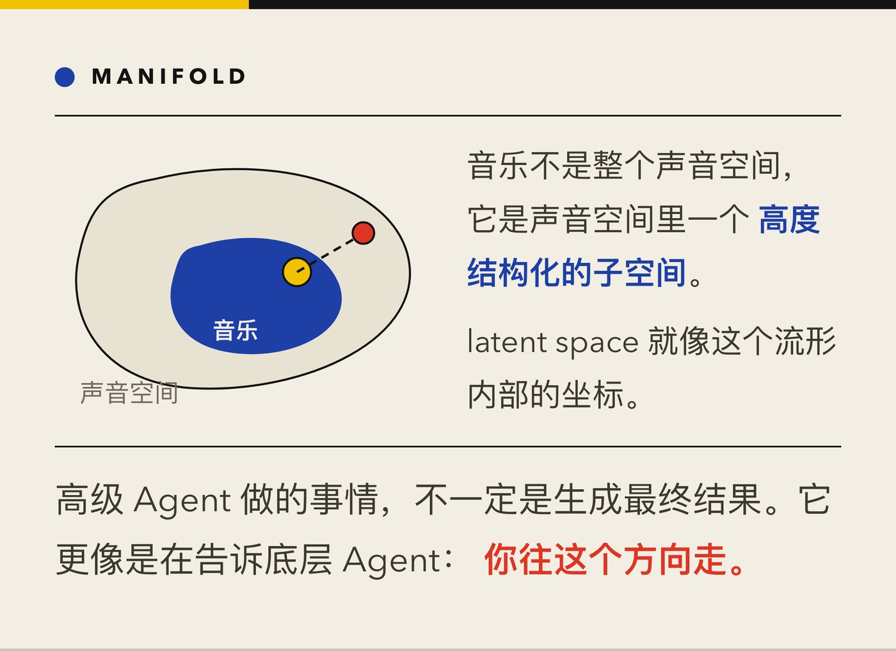
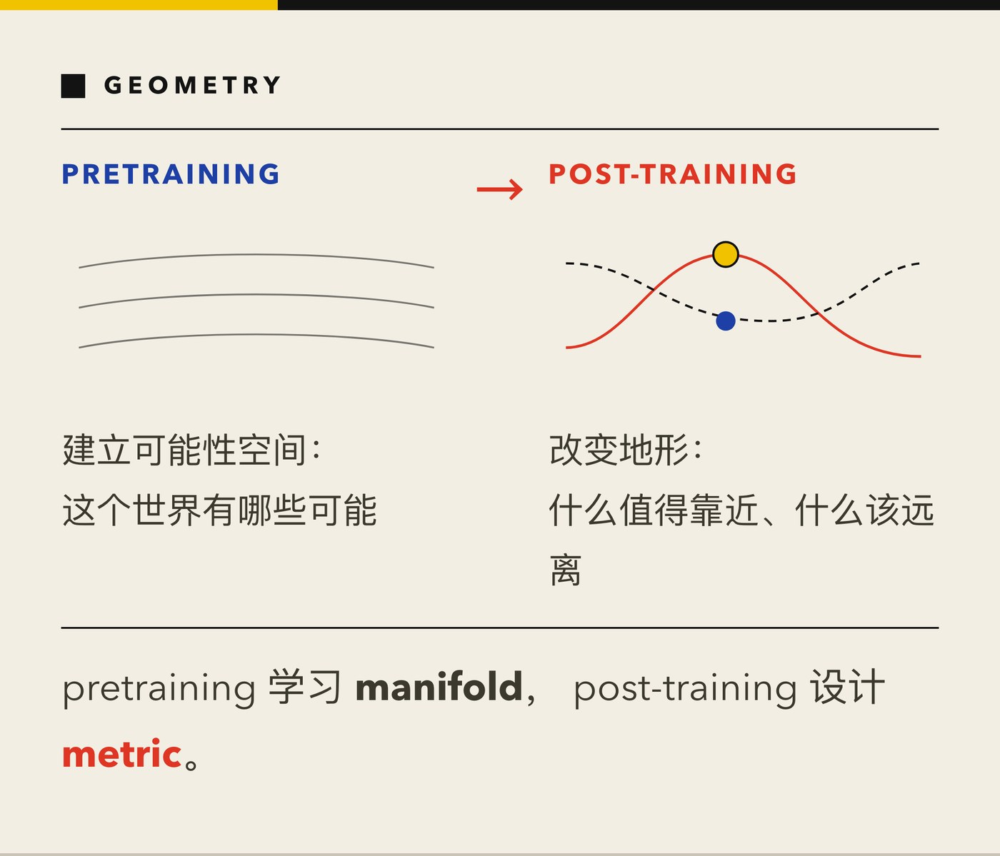
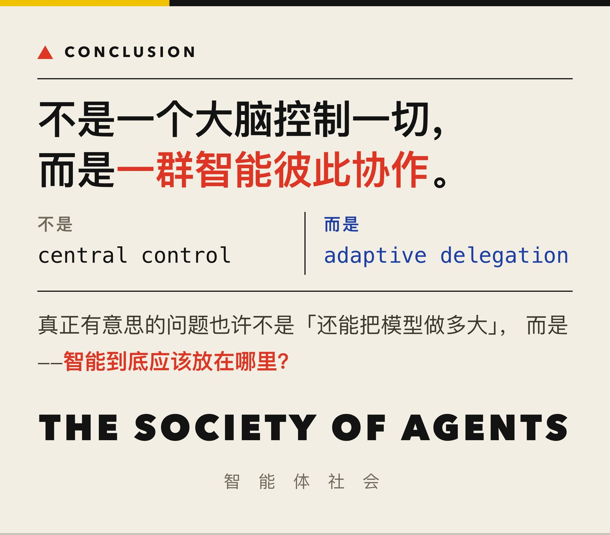

AI 领域曾经有一个很著名的思想，叫 The Society of Mind。
Marvin Minsky 认为，人的智能并不是一个完整统一的东西，而是由很多不同的小系统共同组成的。
后来，深度学习出现了，特别是 GPT 出现以后，我们似乎走到了另一个方向。
大家开始相信：
智能可以端到端地学出来。
不需要提前规定结构，不需要定义太多模块，也不需要手工写下复杂规则。
只要模型足够大，数据足够多，训练足够充分，很多能力就会自己出现。
这套思路非常成功。
但我最近越来越觉得，端到端学习是对的，并不意味着端到端架构也是对的。
也许，智能最终仍然是有结构的。
只是这个结构，不再是过去那种僵硬的符号规则。

▲ ■ ●
1. 一个模型真的应该管所有事情吗？
想象一个人走路。
如果我们采取一种最极端的“端到端”观点，那么大脑应该控制身体里的每一个细节。
哪一块肌肉收缩。
收缩多少。
什么时候放松。
脚掌哪个位置受力。
膝盖改变多少角度。
下一个 10 毫秒又该如何调整。
但生物显然不是这样工作的。
人走路的时候，根本不会意识到这些东西。
我们只会想：
往前走。快一点。慢一点。往左边。停下来。
然后身体自己完成剩下的事情。
这件事非常重要。
它说明高层智能并不是在控制每一个自由度。
它是在委托。
▲ ■ ●
2. 智能更像管理，而不是操纵
我越来越喜欢用“委托”来理解智能。
一个好的上级不会告诉下级每一步该怎么做。
他只会说：
你去把这件事做好。
真正有能力的下级，会自己决定细节。
如果一个下级什么都不会，只能机械执行，那么上级就必须不断发出具体指令。
但如果下级本身已经很聪明，上级只需要说一个目标。
AI 也可能是一样。
未来一个高级 AI 不应该控制每一个细节。
它应该把任务交给另一个同样有能力的 AI。
上层负责目标。
下层负责实现。
这其实已经在今天发生了。
我可以让 GPT 或 Claude 先理解我的意思。
然后它帮我写一个 prompt。
这个 prompt 交给视频模型。
视频模型生成视频。
或者交给音乐模型。
音乐模型生成音乐。
这里并不是一个模型包办一切。
而是 不同的模型，各自在自己最擅长的空间里工作。
▲ ■ ●
3. 为什么这件事在机器人里更明显
机器人特别能说明这个问题。
比如让一个机器人抓一个苹果。
一种思路是：
让一个大模型直接控制所有关节。
肩膀转多少。
肘部多少。
手腕多少。
每根手指怎么动。
每个关节每一时刻输出多少力矩。
理论上当然可以这样做。
但另一种办法是：
上层只说：
抓住那个苹果。
然后底层的抓取系统自己完成动作。
再往下，手指控制器自己决定如何调整。
如果发现物体在滑，就加一点力。
如果发现物体比想象中重，就重新调整姿态。
如果接触位置不对，就稍微修正。
这个过程中，高层 根本不需要知道每一根手指具体发生了什么。
这才更像真正的智能系统。
▲ ■ ●
4. 身体本身就是一个分层的智能系统
其实生物早就这样做了。
比如心跳。
心脏必须不停工作。
如果每一下心跳都要由大脑主动决定，那将是一件非常荒谬的事情。
心脏自己有节律。
神经系统只负责调节。
快一点。
慢一点。
紧张时提高输出。
休息时降低输出。
也就是说，底层系统本身就有很强的自主性。
大脑不是在逐拍控制它。
大脑是在调节它。
走路也是一样。
脊髓、脑干、小脑和各种局部回路已经承担了大量工作。
上层系统更多是在说：
去哪。
多快。
注意什么。
而不是控制每一块肌肉。
所以，真正的智能结构也许不是：
中央大脑 → 被动执行器
而是：
一个智能系统 → 另一个智能系统 → 再一个智能系统
每一层都可以自己解决问题。
▲ ■ ●
5. 分层，其实是一种信息压缩
这件事从物理上也很合理。
如果人体每一块肌肉都要跟大脑直接交换大量信号，那么整个系统的布线会变得极其复杂。
但如果局部系统先把一大堆自由度压缩掉，事情就简单很多。
比如“走路”。
一个完整的步态可能涉及几十块肌肉、很多关节和连续的动态变化。
但对高层来说，可能只需要几个参数：
方向。
速度。
步幅。
停还是走。
于是，一个高维问题被压缩成一个低维问题。
我觉得这个观点对 AI 很重要。
一个好的底层 Agent，本质上就是一个压缩器。
它把复杂的执行空间，压缩成一个很小的控制接口。
上层不再需要处理所有细节。

▲ ■ ●
6. prompt 可能就是未来智能之间的接口
这也是为什么我觉得 prompt 这件事很有意思。
prompt 看起来很粗糙。
几句话。
几个关键词。
一个模糊的要求。
但它却可以控制一个极其复杂的模型。
比如我对音乐模型说：
悲伤一点。
像夜晚。
慢一点。
弦乐为主。
有一种远去的感觉。
这些词并没有定义每一个音符。
更没有定义最终声音波形中的每一个采样点。
但模型知道该怎么办。
为什么？
因为复杂性已经在模型内部了。
prompt 只是在调节它。
所以，未来不同智能系统之间的接口，也许不是精确的数字命令。
而是更接近一种 语义条件。
甚至可以说是一种高级 prompt。
▲ ■ ●
7. 一个子 Agent，本身也应该是“大模型”
过去我们讲模块化，往往容易想到：
一个视觉模块。
一个路径规划模块。
一个控制模块。
然后大家像传统软件一样，通过固定 API 通信。
但我觉得未来不是这样。
未来的底层模块，本身可能也是一个很复杂的大模型。
一个音乐 Agent，不是一个简单函数。
它可能已经学习了海量音乐。
一个操作 Agent，也不是几个规则。
它可能在仿真和真实世界里学习了数百万次抓取和操作。
一个步态 Agent，也可能包含大量关于身体动力学、平衡和地形适应的知识。
所以，模块化并不等于简单化。
相反：
每一个模块都可以很复杂。
整个系统的结构来自这些复杂智能之间的分工，而不是来自把每个模块做得很笨。
▲ ■ ●
8. 为什么接口可以模糊？
传统软件喜欢精确接口。
输入是什么。
输出是什么。
格式是什么。
类型是什么。
全部定义清楚。
但智能之间也许不需要这么精确。
原因很简单：
接收方自己会理解。
比如你告诉一个人：
“去那边看看。”
这句话其实非常不精确。
多远？
哪条路径？
先迈哪只脚？
避开哪些障碍？
怎么转身？
都没说。
但人能完成。
因为听话的人本身也是一个智能系统。
所以，一个很有意思的原则是：
接收方越聪明，接口就可以越简单。
这和传统工程几乎相反。
传统工程靠精确协议保证可靠。
智能系统则可能靠“双方都足够聪明”来允许模糊通信。
▲ ■ ●
9. 视觉为什么可以慢，触觉为什么必须快
还有一个问题，是实时性。
视觉往往看到的是远处。
远处有一个人。
有一张桌子。
有一个苹果。
这些东西还没有碰到你。
所以视觉允许一定延迟。
你有时间判断。
有时间预测。
有时间规划。
但是触觉不一样。
当东西已经碰到你时，时间尺度立刻变了。
手里的杯子开始滑。
脚踩到不平的地方。
身体突然失去平衡。
这些事情 不能等一个大型模型慢慢推理。
必须快速反应。
所以真正合理的系统，天然会出现不同时间尺度。
高层可以慢。
底层必须快。
这也是为什么运动过程中完全依赖视觉是不合理的。
人可以闭眼走路。
人可以只靠脚底和身体感觉调整姿态。
很多时候，我们甚至是在意识还没来得及反应之前，身体已经完成了调整。
▲ ■ ●
10. 视觉不是精确控制，而是提前给一个猜测
比如伸手去拿苹果。
视觉给你的其实未必是一个精确答案。
它可能只是说：
苹果大概在那里。
距离大概这么远。
大小大概如此。
这个估计可以是模糊的。
但有总比没有好。
运动系统可以提前准备。
手先伸过去。
手指先张开。
身体提前移动。
真正碰到苹果以后，触觉开始接管。
这时候你会迅速知道：
它比想象中重。
表面有点滑。
大小不完全一样。
于是手自动调整。
这是一种非常漂亮的协作。
视觉负责预测。
触觉负责修正。
本体感觉负责知道身体自己在哪里。
运动系统负责快速闭环。
并不存在一个中央系统拥有所有最精确的信息。
▲ ■ ●
11. 练习，其实是在把智能下沉
这也解释了为什么人需要练习。
刚开始学一个动作时，你会很用力地想。
比如第一次投篮。
你会注意：
手怎么抬。
腿怎么发力。
手腕怎么压。
球应该多高。
但是练习很多以后，你不会再想这些事情。
你只看到篮筐。
然后投出去。
人们把这种现象叫“肌肉记忆”。
严格说，记忆当然不是存在肌肉里。
但这个词很好地表达了一个事实：
控制能力被下沉了。
一个本来需要高层意识参与的任务，逐渐被更低层的运动系统接管。
于是高层可以把注意力放到更重要的事情上。
这对 AI 很有启发。
学习的一个重要意义，也许不是让中央模型什么都做得更好。
而是让越来越多能力成为可以被委托的 primitive。
▲ ■ ●
12. skill 本身可以理解成一个流形
我觉得还可以再往前走一步。
一个子 Agent 的能力，可以理解成一个“流形”。
比如声音空间非常大。
任意噪声都属于声音。
但音乐只是其中非常小的一部分。
也就是说，音乐不是整个声音空间。
它是声音空间中的一个高度结构化子空间。
一个音乐模型学到的，其实就是：
什么样的声音像音乐。
什么样的节奏合理。
什么样的旋律具有连续性。
什么样的和声属于某种风格。
所以，它并不是从无限可能中随便输出。
它是在一个已经学会的“音乐空间”里生成。
这也是为什么它的输出通常是合理的。
▲ ■ ●
13. latent space 就像这个世界内部的坐标
如果把这个子空间理解成一个流形，那么 latent space 就有点像这个流形内部的坐标。
你不需要控制最终的几百万个变量。
你只需要改变几个更有意义的方向。
比如：
更悲伤。
更快。
更明亮。
更古典。
更有力量。
这些东西看起来很抽象。
但它们可能对应 latent space 里某些方向。
所以高级 Agent 做的事情，不一定是生成最终结果。
它更像是在告诉底层 Agent：
你往这个方向走。

▲ ■ ●
14. 后训练，也许是在重新塑造这个空间
如果这样理解，那么 pretraining 和 post-training 的关系也会变得很有意思。
预训练做的事情，也许是在学习：
这个世界有哪些可能。
哪些语言是合理的。
哪些声音是音乐。
哪些动作是可行的。
哪些知识和模式经常一起出现。
也就是说，预训练先建立了一个“可能性空间”。
而后训练做的事情是什么？
可能是在这个空间里重新定义：
什么更好。
什么更差。
什么值得靠近。
什么应该远离。
什么行为更符合人的偏好。
从几何上讲，我喜欢把它理解成：
pretraining 学习 manifold，post-training 设计 metric。
预训练先创造空间。
后训练再改变这个空间里的地形。
哪些方向变得容易走。
哪些地方变成高代价区域。
哪些状态变得更吸引模型。
这当然是一个抽象比喻。
但我觉得它很好地解释了为什么后训练并不是重新发明模型的全部能力，而更多是在重新组织这些能力。

▲ ■ ●
15. Agent 之间也需要一个小小的翻译器
还有一个问题：
不同 Agent 的 latent space 不一样怎么办？
其实没关系。
我们不需要让所有 Agent 内部使用同一种语言。
中间可以放一个很小的 bridge network。
或者一个 adapter。
或者一个 head。
它负责翻译。
一个视觉 Agent 的输出，转换成运动 Agent 能理解的 condition。
一个语言 Agent 的语义表示，转换成音乐 Agent 能理解的风格条件。
这个 bridge 甚至可以单独 post-train。
于是我们不再要求所有系统共享一个大脑。
只需要让它们学会沟通。
我觉得这反而更接近真正的智能。
▲ ■ ●
16. 所以，The Society of Mind 可能并没有错
回到最开始。
也许 Minsky 的核心判断并没有错。
智能确实可能是一个 society。
只是当时我们把这个 society 想得太像传统软件。
一个规则。
一个模块。
一个符号。
一个显式接口。
生命真正实现 intelligence society 的方式，可能更模糊，也更强大。
每一个子系统都不是规则。
而是一个自适应模型。
每一个模块都不是简单程序。
而是一个拥有自己经验和表示空间的小智能。
它们之间也不是靠绝对精确的协议连接。
而是靠意图、条件、预测和不断学习出来的接口合作。
▲ ■ ●
17. 我真正感兴趣的问题
所以，我现在越来越觉得，AI 下一步最有意思的问题，也许不是：
我们还能把一个模型做多大？
而是：
智能到底应该放在哪里？
哪些事情应该由高层做？
哪些事情应该被下放？
底层应该拥有多大的自主权？
两个 Agent 之间最少需要交流多少信息？
什么应该成为 primitive？
什么应该由 prompt 调节？
什么需要高速闭环？
什么可以慢慢规划？
如果这些问题想清楚，我们得到的也许就不再只是一个更大的模型。
而是一种新的智能架构。
不是一个大脑控制一切。
而是一群智能彼此协作。
不是 central control。
而是 adaptive delegation。
不是一个无所不能的模型。
而是：
The Society of Agents.
